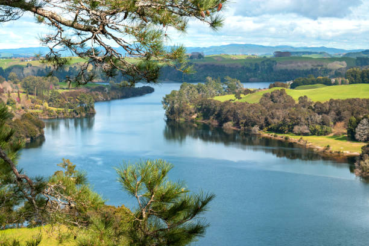

Major Rivers

Waikato River
The longest river in New Zealand, flowing through the central North Island.
Learn MoreClutha River
A powerful river in the South Island known for its stunning and tranquil waters.
Learn MoreWhanganui River
A culturally significant river in the North Island with deep Māori heritage.
Learn More